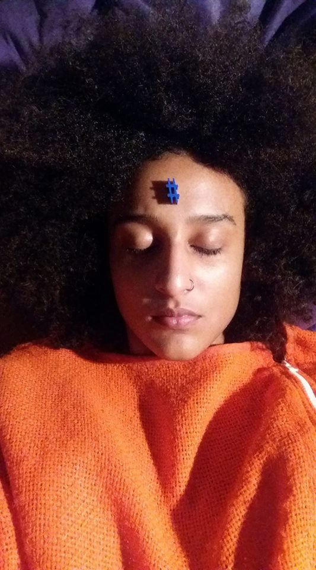

Funções / Animação
As informações de cada perfil são de responsabilidade das profissionais.
Você quer conhecer profissionais de quais estados?
Marcar/Desmarcar todos
CARREGANDO ...
Bia Rodrigues (Biarritzzz) (PE)
Bia Rodrigues (Biarritzzz)
22 anos | Recife (PE)
beabiasoares@gmail.com
Bia Rodrigues, ou como o seu “avatarônimo” se intitula, biarritzzz, é uma artista brasileira que trabalha com vídeo e novas mídias. Nascida em 1994, Bia tem participado de exposições e mostras pelo Brasil afora desde 2013.
http://biarritzzz.hotglue.me
Outras atividades de Bia Rodrigues (Biarritzzz)
Direção |
Edição
Amostra de vídeo
 Jessica Figueiró (SP)
Jessica Figueiró (SP)
Jessica Figueiró
23 anos | São Paulo (SP)
figueiroh@outlook.com
Olá, sou a Jessica, nascida e moradora da zona leste de São Paulo. Tenho técnico de design gráfico e cursos de computação gráfica. Ao escolher minha graduação, decidir unir minha paixão por design/ilustração com a de cinema, e escolhi Animação. Participei de algumas masterclass de animação e fiz um curso de Teoria e Estilos Cinematográficos com Pablo Villaça. Até o momento só trabalhei com design, direção de arte e ilustração. Meus trabalhos de audiovisual foram realizados até agora somente na faculdade. Atualmente estou finalizando um curso de Front End, no qual pretendo fazer mais uma ponte entre minhas paixões.
http://flickr.com/jessicafigueiro
Outras atividades de Jessica Figueiró
Correção de cor |
Desenho de efeitos |
Direção de arte |
Edição |
Roteiro

Amostra de vídeo
 Marina Kerber (RS/SP)
Marina Kerber (RS/SP)
Marina Kerber
25 anos | Porto Alegre (RS) e São Paulo (SP)
marinatkerber@gmail.com
Mestra em Meios e Processos Audiovisuais na USP. Bacharel em Realização Audiovisual pela UNISINOS. Tem experiência profissional em Cinema, principalmente, como diretora, diretora de arte, figurinista e animadora, tendo experiência em curta-metragens, longa-metragens e videoclipes. Já participou de festivais nacionais e internacionais de cinema, principalmente direcionados às técnicas de animação (Upto3/Canadá, Monstra Festival/Portugal) e ganhou prêmios em festivais como o Festival do Minuto (Recheio de Tinta, Pequena Porção vermelha e Martina) e o 1º Festival Luz de Cinema Latino-americano (Balão Selvagem).
http://be.net/marinakerber
Outras atividades de Marina Kerber
Atuação |
Direção |
Direção de Arte |
Figurino |
Fotografia still
Amostra de vídeo
 Natalie Matos (MG)
Natalie Matos (MG)
Natalie Matos
21 anos | Belo Horizonte (MG)
natalie.m.moura@gmail.com
A única certeza que mora em mim é a de que a cada passo aprendo algo novo e construo minha identidade. Como uma árvore que cresce regada ao amor e às dificuldades, dá bons frutos e flores, mas também amadurece antes da hora e às vezes até mesmo cai, mas, sempre lembra que tudo que se vive fortalece suas raízes. E sempre quando eu precisar vou ao meu interior e discuto comigo, para entender esse meu eu que às vezes recusa falar e prefere apenas sentir. Gradua em Cinema e Audiovisual e Técnico em Artes Visuais, hoje tenho projetos de visibilidade ao protagonismo da mulher preta e a juventude periférica.
http://nataliem-moura.wixsite.com/nataliematos
Outras atividades de Natalie Matos
Assistência de Direção |
Captação de Recursos |
Captação de Som |
Cenografia |
Continuidade |
Correção de cor |
Direção |
Direção de Arte |
Direção de Fotografia |
Edição |
Fotografia Still |
Iluminação |
Mixagem e efeitos sonoros |
Pesquisa e desenvolvimento |
Preparação de Elenco |
Produção |
Roteiro
Amostra de vídeo
 Waleska Brito Silva Santos (SP)
Waleska Brito Silva Santos (SP)
Waleska Brito Silva Santos
23 anos | São Paulo (SP)
waleska.bbrito@gmail.com
Sou recém formada pela Universidade Metodista de São Paulo, sou bacharel em comunicação social com ênfase em Rádio, TV e Internet. Possuo experiência em produção e edição. Trabalhei para a Somos Educação (antiga Abril Educação) da qual fiz parte do projeto Apprendi! que visa conteúdo audiovisual para escolas do país inteiro. Como trabalhos acadêmicos já realizei edição e direção de arte.